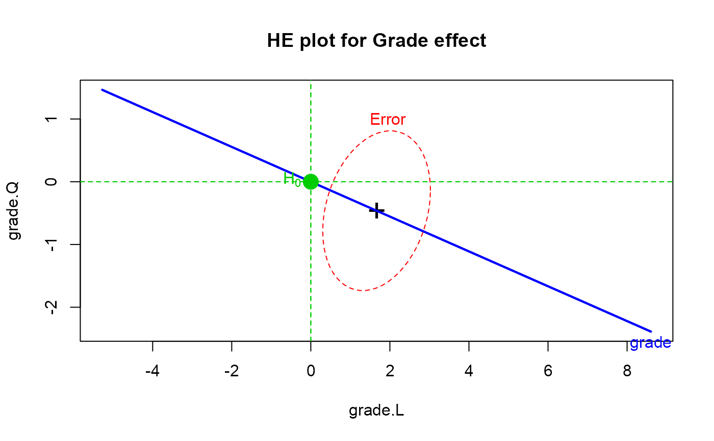

mark.H0.RdA utility function to draw and label a point in a 2D (or 3D) HE plot corresponding to a point null hypothesis being tested. This is most useful for repeated measure designs where null hypotheses for within-S effects often correspond to (0,0).
mark.H0(x = 0, y = 0, z=NULL, label, cex = 2, pch = 19, col = "green3", lty = 2, pos = 2)Horizontal coordinate for H0
Vertical coordinate for H0
z coordinate for H0. If not NULL, the function assumes that
a heplot3d plot has been drawn.
Text used to label the point. Defaults to expression(H[0]) in 2D plots.
Point and text size. For 3D plots, the function uses
size=5*cex in a call to points3d.
Plot character. Ignored for 3D plots.
Color for text, character and lines
Line type for vertical and horizontal reference lines. Not
drawn if lty=0.
Position of text. Ignored for 3D plots
None. Used for side effect of drawing on the current plot.
cross3d, ~~~
Vocab.mod <- lm(cbind(grade8,grade9,grade10,grade11) ~ 1, data=VocabGrowth)
idata <-data.frame(grade=ordered(8:11))
heplot(Vocab.mod, type="III", idata=idata, idesign=~grade, iterm="grade",
main="HE plot for Grade effect")
mark.H0()
